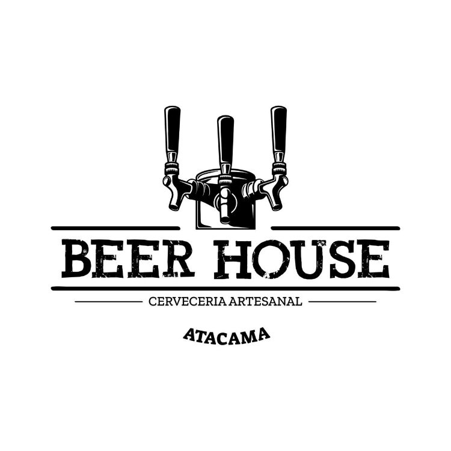
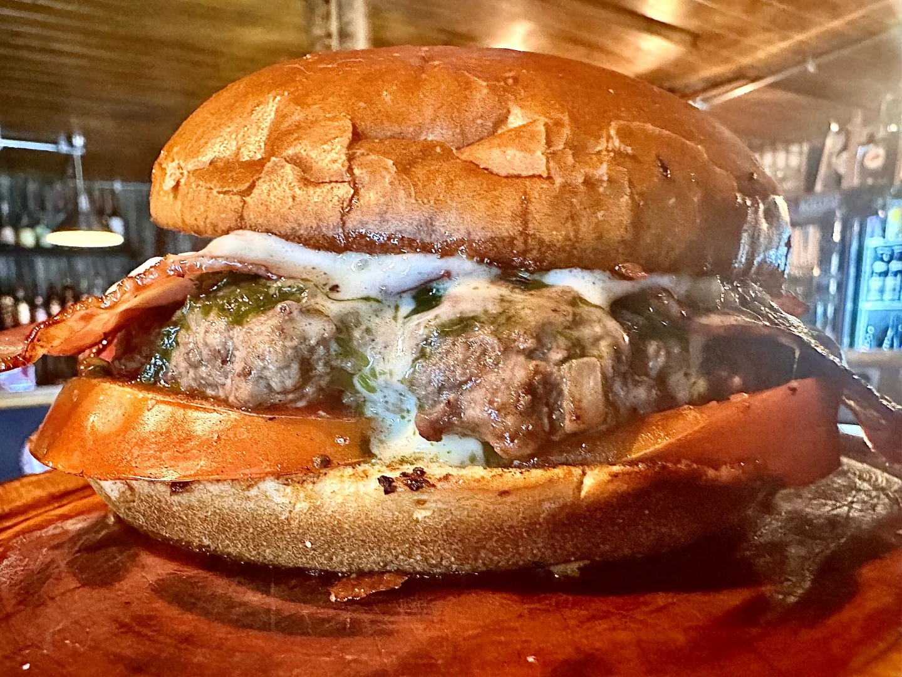
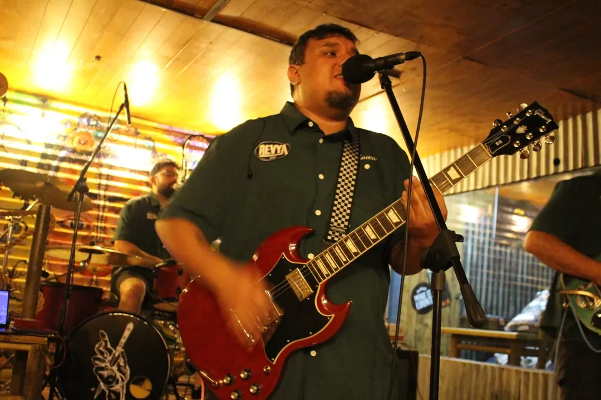
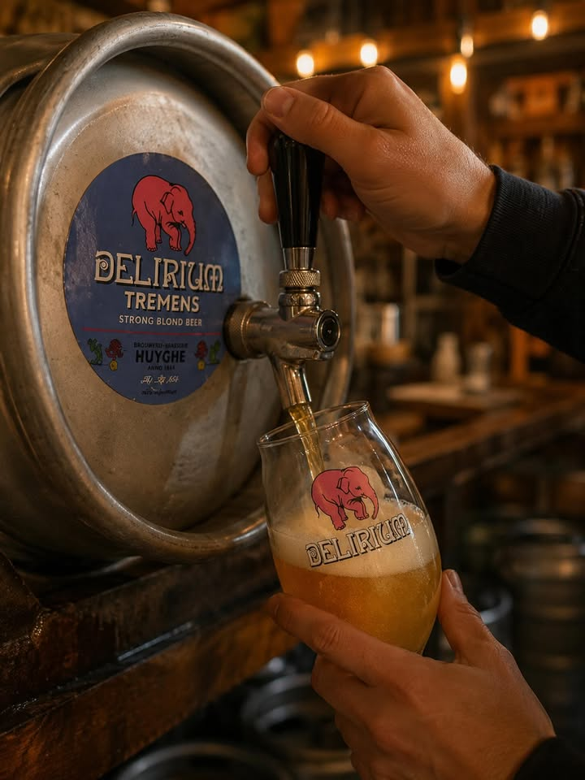
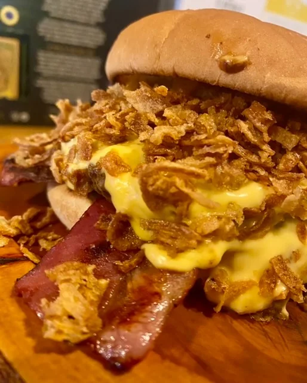
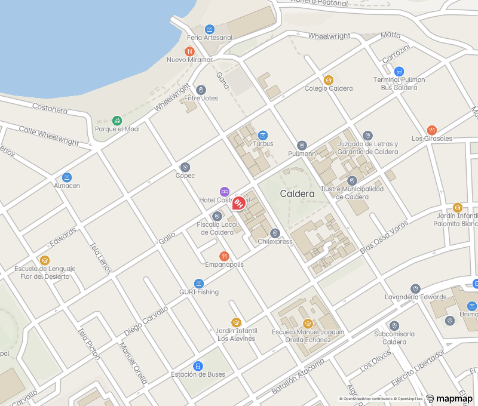

Burrata
Burrata, tocino crocante, tomate fresco y pesto de albahaca casero.

CARTA COMPLETAGALLO 541 · CALDERA · ATACAMA
De la cocina al escenario: burgers artesanales, cerveza fría y noches que se escuchan fuerte.

DE LA CARTA BURRATA ↗ESTO ES BEER HOUSE
Una casa de hamburguesas y cerveza donde también suenan bandas en vivo. En Gallo 541 se cruzan las burgers de la carta, las pintas, los tributos y la escena musical que mueve a Caldera.
NOCHES EN LA CASA · ARCHIVO DEL ESCENARIO
Beer House también abre espacio a bandas, tributos y encuentros musicales. En su escenario han sonado rock latino, ska, funk y más. Sigue el Instagram oficial para conocer las próximas fechas.


ANTES DEL ENCORE
Schop de la semana, cervezas nacionales e internacionales y una carta hecha para acompañarlas. Revisa la selección vigente y encuentra tu próxima pinta.
Explorar cervezasDE LA PRIMERA CANCIÓN AL ÚLTIMO TEMA
Una burger real de la carta, papas al centro y una mesa para compartir la noche. Así se vive Beer House dentro y fuera del escenario.
VEN A GALLO 541
NOS VEMOS EN LA CASA
